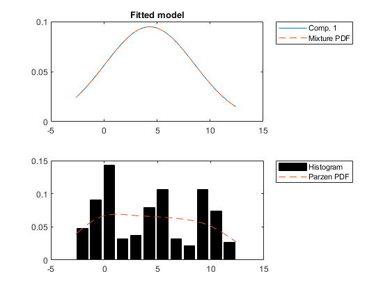
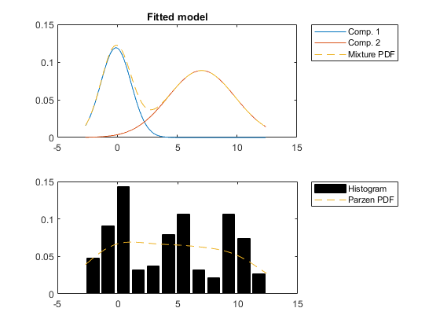
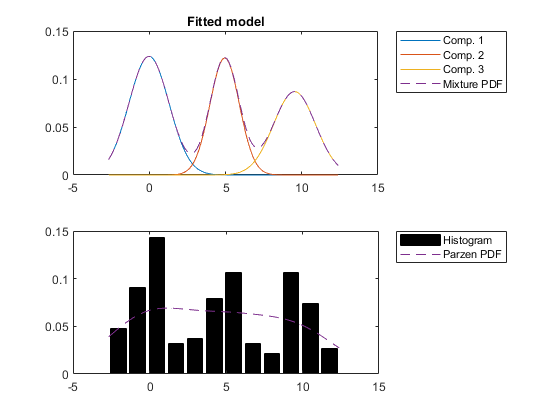
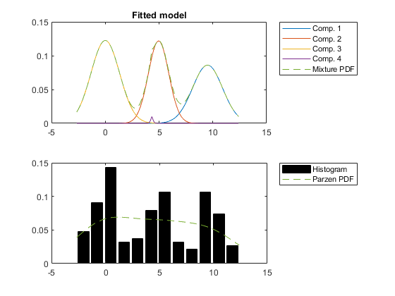
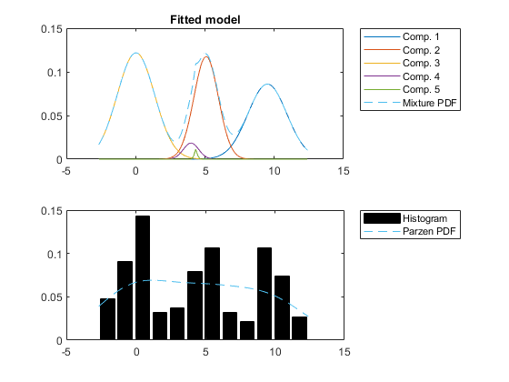
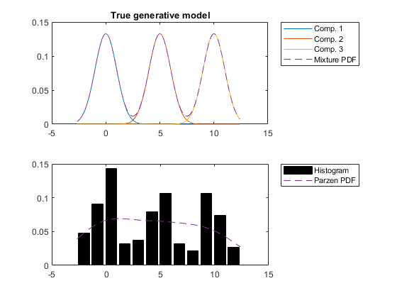
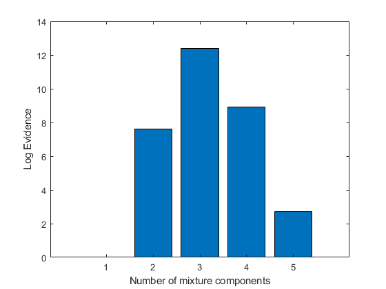

function [vbmix logev mix] = spm_mix_demo1d (data, maxcomps, verbosity)
clear all
close all
if nargin < 3
verbosity = 1;
end
if nargin < 2
maxcomps = 5;
end
if nargin < 1
data = 3;
end
if isscalar(data)
mix.m = data;
if verbosity > 0
fprintf('Simulating data with %d clusters\n', mix.m)
end
means = 0:5:5*(mix.m - 1);
for m = 1:mix.m
mix.state(m).prior = 1 / mix.m;
mix.state(m).m = means(m);
mix.state(m).C = 1;
end
N = 50 * mix.m;
data = spm_samp_mix(mix, N);
else
data = data(isfinite(data));
mix = 'Own data given';
end
logev = nan(maxcomps, 1);
vbmix = cell(maxcomps, 1);
for m = 1:maxcomps
if verbosity > 0
fprintf('Fitting mixture model with %d components\n', m);
end
vbmix{m} = spm_mix(data, m, verbosity > 1);
if verbosity > 0
figure
spm_mix_plot1d (data, vbmix{m})
title('Fitted model')
end
logev(m) = vbmix{m}.fm;
end
logev = logev-min(logev);
if verbosity > 0
if isstruct(mix)
figure;
spm_mix_plot1d (data, mix);
title('True generative model')
end
figure
bar(logev);
xlabel('Number of mixture components');
ylabel('Log Evidence');
end
if nargout == 0 && verbosity > 0
clear vbmix
end
Simulating data with 3 clusters
Fitting mixture model with 1 components
Fitting mixture model with 2 components
Kmeans init: retry 1 out of 10, sumd=9477.37
Kmeans init: retry 2 out of 10, sumd=9407.03
Kmeans init: retry 3 out of 10, sumd=9407.03
Kmeans init: retry 4 out of 10, sumd=9477.37
Kmeans init: retry 5 out of 10, sumd=9477.37
Kmeans init: retry 6 out of 10, sumd=9407.03
Kmeans init: retry 7 out of 10, sumd=9477.37
Kmeans init: retry 8 out of 10, sumd=9407.03
Kmeans init: retry 9 out of 10, sumd=9407.03
Kmeans init: retry 10 out of 10, sumd=9477.37
Iter=1, F1=-0.25, F2=-13.31, F3=-7.36, F4=-189.95, F5=-322.22, Fm=-533.10
Iter=2, F1=-1.80, F2=-13.38, F3=-7.46, F4=-87.57, F5=-321.84, Fm=-432.05
Iter=3, F1=-1.80, F2=-13.32, F3=-7.92, F4=-87.58, F5=-320.48, Fm=-431.11
Iter=4, F1=-1.81, F2=-13.24, F3=-8.51, F4=-87.64, F5=-319.21, Fm=-430.42
Iter=5, F1=-1.81, F2=-13.17, F3=-9.06, F4=-87.48, F5=-318.49, Fm=-430.02
Iter=6, F1=-1.82, F2=-13.13, F3=-9.48, F4=-87.14, F5=-318.27, Fm=-429.83
Iter=7, F1=-1.82, F2=-13.11, F3=-9.74, F4=-86.78, F5=-318.32, Fm=-429.76
Iter=8, F1=-1.82, F2=-13.10, F3=-9.90, F4=-86.46, F5=-318.47, Fm=-429.74
Fitting mixture model with 3 components
Kmeans init: retry 1 out of 10, sumd=15546.73
Kmeans init: retry 2 out of 10, sumd=15546.73
Kmeans init: retry 3 out of 10, sumd=15546.73
Kmeans init: retry 4 out of 10, sumd=15546.73
Kmeans init: retry 5 out of 10, sumd=15546.73
Kmeans init: retry 6 out of 10, sumd=15546.73
Kmeans init: retry 7 out of 10, sumd=15546.73
Kmeans init: retry 8 out of 10, sumd=15546.73
Kmeans init: retry 9 out of 10, sumd=15546.73
Kmeans init: retry 10 out of 10, sumd=15546.73
Iter=1, F1=-1.52, F2=-15.53, F3=-29.27, F4=-372.43, F5=-224.28, Fm=-643.03
Iter=2, F1=-3.17, F2=-16.32, F3=-19.79, F4=-156.81, F5=-229.73, Fm=-425.83
Iter=3, F1=-3.17, F2=-16.38, F3=-18.46, F4=-155.85, F5=-231.43, Fm=-425.29
Iter=4, F1=-3.17, F2=-16.39, F3=-17.85, F4=-155.32, F5=-232.38, Fm=-425.11
Iter=5, F1=-3.17, F2=-16.40, F3=-17.49, F4=-154.96, F5=-233.00, Fm=-425.03
Iter=6, F1=-3.17, F2=-16.40, F3=-17.27, F4=-154.73, F5=-233.42, Fm=-425.00
Fitting mixture model with 4 components
Kmeans init: retry 1 out of 10, sumd=21776.43
Kmeans init: retry 2 out of 10, sumd=19531.84
Kmeans init: retry 3 out of 10, sumd=23199.35
Kmeans init: retry 4 out of 10, sumd=23199.35
Kmeans init: retry 5 out of 10, sumd=23199.35
Kmeans init: retry 6 out of 10, sumd=23199.35
Kmeans init: retry 7 out of 10, sumd=21776.43
Kmeans init: retry 8 out of 10, sumd=21776.43
Kmeans init: retry 9 out of 10, sumd=21776.43
Kmeans init: retry 10 out of 10, sumd=23199.35
Iter=1, F1=-5.94, F2=-19.00, F3=-40.66, F4=-447.53, F5=-223.63, Fm=-736.76
Iter=2, F1=-5.22, F2=-20.14, F3=-21.48, F4=-160.24, F5=-227.25, Fm=-434.33
Iter=3, F1=-5.28, F2=-20.26, F3=-19.29, F4=-158.20, F5=-230.14, Fm=-433.17
Iter=4, F1=-5.34, F2=-20.02, F3=-18.35, F4=-157.20, F5=-231.59, Fm=-432.49
Iter=5, F1=-5.39, F2=-19.67, F3=-17.82, F4=-156.57, F5=-232.53, Fm=-431.97
Iter=6, F1=-5.44, F2=-19.30, F3=-17.48, F4=-156.15, F5=-233.18, Fm=-431.55
Iter=7, F1=-5.49, F2=-18.91, F3=-17.26, F4=-155.88, F5=-233.61, Fm=-431.15
Iter=8, F1=-5.55, F2=-18.45, F3=-17.10, F4=-155.75, F5=-233.83, Fm=-430.67
Iter=9, F1=-5.61, F2=-17.85, F3=-16.99, F4=-155.73, F5=-233.84, Fm=-430.02
Iter=10, F1=-5.65, F2=-17.15, F3=-16.93, F4=-155.73, F5=-233.84, Fm=-429.31
Iter=11, F1=-5.69, F2=-16.76, F3=-16.90, F4=-155.72, F5=-233.87, Fm=-428.94
Iter=12, F1=-5.74, F2=-16.55, F3=-16.89, F4=-155.68, F5=-233.87, Fm=-428.73
Iter=13, F1=-5.78, F2=-16.42, F3=-16.88, F4=-155.66, F5=-233.85, Fm=-428.59
Iter=14, F1=-5.80, F2=-16.34, F3=-16.89, F4=-155.64, F5=-233.84, Fm=-428.51
Iter=15, F1=-5.82, F2=-16.30, F3=-16.89, F4=-155.63, F5=-233.83, Fm=-428.47
Fitting mixture model with 5 components
Kmeans init: retry 1 out of 10, sumd=24873.93
Kmeans init: retry 2 out of 10, sumd=30151.34
Kmeans init: retry 3 out of 10, sumd=31994.56
Kmeans init: retry 4 out of 10, sumd=24873.93
Kmeans init: retry 5 out of 10, sumd=24873.93
Kmeans init: retry 6 out of 10, sumd=26251.39
Kmeans init: retry 7 out of 10, sumd=24873.93
Kmeans init: retry 8 out of 10, sumd=26317.41
Kmeans init: retry 9 out of 10, sumd=26251.39
Kmeans init: retry 10 out of 10, sumd=43028.41
Iter=1, F1=-8.67, F2=-19.87, F3=-111.34, F4=-657.63, F5=-171.01, Fm=-968.52
Iter=2, F1=-5.40, F2=-23.49, F3=-34.29, F4=-189.22, F5=-201.98, Fm=-454.38
Iter=3, F1=-5.40, F2=-24.20, F3=-28.17, F4=-177.83, F5=-213.21, Fm=-448.81
Iter=4, F1=-5.41, F2=-24.55, F3=-25.38, F4=-171.88, F5=-219.44, Fm=-446.66
Iter=5, F1=-5.42, F2=-24.72, F3=-23.89, F4=-168.62, F5=-223.08, Fm=-445.74
Iter=6, F1=-5.43, F2=-24.81, F3=-23.03, F4=-166.77, F5=-225.28, Fm=-445.32
Iter=7, F1=-5.45, F2=-24.84, F3=-22.50, F4=-165.66, F5=-226.65, Fm=-445.10
Iter=8, F1=-5.46, F2=-24.85, F3=-22.15, F4=-164.97, F5=-227.53, Fm=-444.96
Iter=9, F1=-5.47, F2=-24.84, F3=-21.92, F4=-164.52, F5=-228.12, Fm=-444.87
Iter=10, F1=-5.48, F2=-24.83, F3=-21.75, F4=-164.20, F5=-228.54, Fm=-444.79
Iter=11, F1=-5.49, F2=-24.81, F3=-21.62, F4=-163.97, F5=-228.84, Fm=-444.72
Iter=12, F1=-5.50, F2=-24.78, F3=-21.52, F4=-163.78, F5=-229.07, Fm=-444.65
Iter=13, F1=-5.51, F2=-24.76, F3=-21.44, F4=-163.62, F5=-229.26, Fm=-444.58
Iter=14, F1=-5.52, F2=-24.73, F3=-21.36, F4=-163.47, F5=-229.43, Fm=-444.51
Iter=15, F1=-5.53, F2=-24.71, F3=-21.29, F4=-163.32, F5=-229.59, Fm=-444.44
Iter=16, F1=-5.55, F2=-24.68, F3=-21.22, F4=-163.16, F5=-229.75, Fm=-444.36
Iter=17, F1=-5.56, F2=-24.66, F3=-21.15, F4=-163.00, F5=-229.89, Fm=-444.27
Iter=18, F1=-5.58, F2=-24.64, F3=-21.08, F4=-162.83, F5=-230.04, Fm=-444.17
Iter=19, F1=-5.60, F2=-24.62, F3=-21.00, F4=-162.65, F5=-230.17, Fm=-444.05
Iter=20, F1=-5.62, F2=-24.61, F3=-20.91, F4=-162.47, F5=-230.30, Fm=-443.91
Iter=21, F1=-5.64, F2=-24.60, F3=-20.81, F4=-162.28, F5=-230.41, Fm=-443.74
Iter=22, F1=-5.67, F2=-24.59, F3=-20.70, F4=-162.08, F5=-230.51, Fm=-443.55
Iter=23, F1=-5.70, F2=-24.58, F3=-20.58, F4=-161.88, F5=-230.59, Fm=-443.34
Iter=24, F1=-5.73, F2=-24.57, F3=-20.44, F4=-161.68, F5=-230.66, Fm=-443.09
Iter=25, F1=-5.77, F2=-24.57, F3=-20.29, F4=-161.47, F5=-230.72, Fm=-442.83
Iter=26, F1=-5.81, F2=-24.56, F3=-20.13, F4=-161.27, F5=-230.77, Fm=-442.55
Iter=27, F1=-5.86, F2=-24.55, F3=-19.96, F4=-161.08, F5=-230.81, Fm=-442.26
Iter=28, F1=-5.90, F2=-24.53, F3=-19.79, F4=-160.91, F5=-230.85, Fm=-441.99
Iter=29, F1=-5.95, F2=-24.51, F3=-19.61, F4=-160.76, F5=-230.89, Fm=-441.73
Iter=30, F1=-6.00, F2=-24.47, F3=-19.44, F4=-160.65, F5=-230.92, Fm=-441.48
Iter=31, F1=-6.05, F2=-24.42, F3=-19.28, F4=-160.56, F5=-230.94, Fm=-441.25
Iter=32, F1=-6.10, F2=-24.35, F3=-19.12, F4=-160.51, F5=-230.95, Fm=-441.03
Iter=33, F1=-6.15, F2=-24.27, F3=-18.97, F4=-160.50, F5=-230.93, Fm=-440.82
Iter=34, F1=-6.20, F2=-24.16, F3=-18.83, F4=-160.52, F5=-230.89, Fm=-440.60
Iter=35, F1=-6.25, F2=-24.02, F3=-18.70, F4=-160.59, F5=-230.80, Fm=-440.36
Iter=36, F1=-6.30, F2=-23.84, F3=-18.57, F4=-160.69, F5=-230.68, Fm=-440.08
Iter=37, F1=-6.36, F2=-23.62, F3=-18.44, F4=-160.81, F5=-230.52, Fm=-439.75
Iter=38, F1=-6.42, F2=-23.34, F3=-18.32, F4=-160.94, F5=-230.34, Fm=-439.35
Iter=39, F1=-6.49, F2=-22.98, F3=-18.19, F4=-161.03, F5=-230.17, Fm=-438.86
Iter=40, F1=-6.55, F2=-22.55, F3=-18.06, F4=-161.08, F5=-230.05, Fm=-438.30
Iter=41, F1=-6.62, F2=-22.05, F3=-17.93, F4=-161.11, F5=-229.94, Fm=-437.66
Iter=42, F1=-6.69, F2=-21.49, F3=-17.81, F4=-161.14, F5=-229.85, Fm=-436.98
Iter=43, F1=-6.75, F2=-20.96, F3=-17.72, F4=-161.11, F5=-229.87, Fm=-436.42
Iter=44, F1=-6.82, F2=-20.58, F3=-17.66, F4=-161.02, F5=-229.97, Fm=-436.05
Iter=45, F1=-6.90, F2=-20.28, F3=-17.60, F4=-160.93, F5=-230.06, Fm=-435.77
Iter=46, F1=-6.97, F2=-20.02, F3=-17.56, F4=-160.83, F5=-230.14, Fm=-435.53
Iter=47, F1=-7.05, F2=-19.78, F3=-17.53, F4=-160.75, F5=-230.20, Fm=-435.31
Iter=48, F1=-7.13, F2=-19.56, F3=-17.51, F4=-160.65, F5=-230.26, Fm=-435.10
Iter=49, F1=-7.19, F2=-19.37, F3=-17.49, F4=-160.54, F5=-230.34, Fm=-434.93
Iter=50, F1=-7.25, F2=-19.22, F3=-17.47, F4=-160.38, F5=-230.49, Fm=-434.81
Iter=51, F1=-7.29, F2=-19.13, F3=-17.44, F4=-160.19, F5=-230.68, Fm=-434.73
Iter=52, F1=-7.33, F2=-19.06, F3=-17.40, F4=-159.96, F5=-230.93, Fm=-434.68
Iter=53, F1=-7.36, F2=-19.00, F3=-17.37, F4=-159.70, F5=-231.21, Fm=-434.64
      